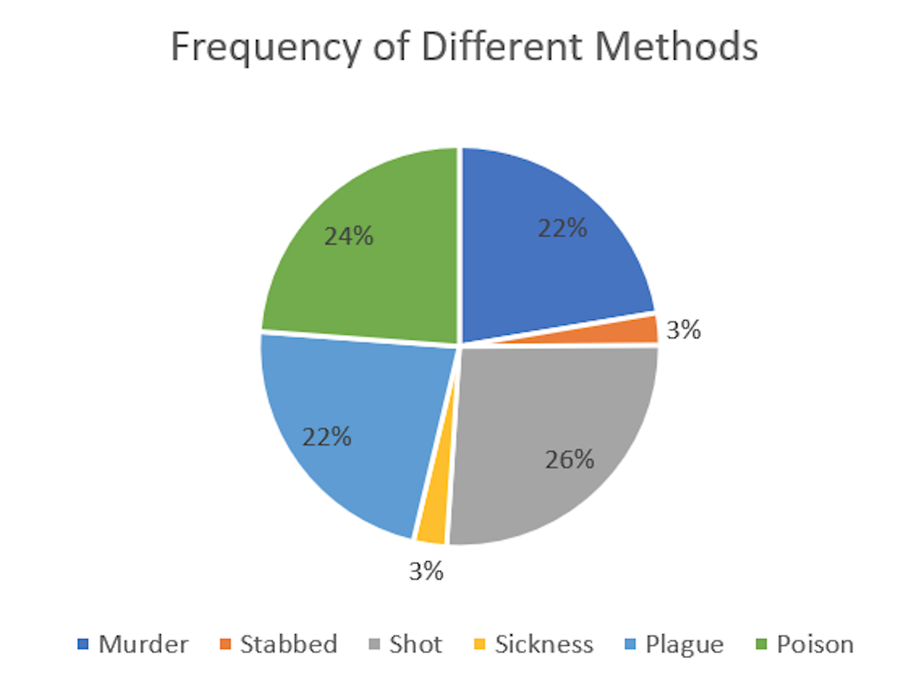

Humans have a natural sense of curiosity about them, and this curiosity can be innocent such as the fascination with a person they’ll never meet and instead reading stories about them, but it can also be darker and the focus can be on murder and torture. The source of our curiosity stems from a trait of human species call neoteny, according to Tom Stafford of BBC. This trait means that we as a species are more childlike than other mammals and tend to want to explore, whether it be physically or mentally. This trait could explain why the stories about death and murder seem to be some of the most popular articles in the Egyptian Gazette.
Since death is such a popular topic among readers, the newspaper probably liked and even encouraged articles and advertisements to write about it because it would please the readers, which in turn would result in more people reading meaning more money for the company. There is a common advertisement found in almost every day’s issue which is titled “The _Egyptian Gazette_” and is the subscriptions and advertisements article which has information on prices. One of the topics suggested in the advertisement sections is “death” showing how popular and common it was to find articles about it throughout the newspaper. The idea of death is almost a form of entertainment for humans. We love to know how the person died, where it occurred, and if it was a murder, who did it and what motivated them to do so. Criminal forensic psychologist Paul G. Mattiuzzi talks about this concept in his article, saying, “In the real world, there is in fact a practical duty we share in understanding the means and the motivations for crime. Understanding is necessary for prediction, prevention and protection. But the popular fascination with homicide goes far beyond the practical. The story lines are a staple of art and literature and a subject for both drama and comedy. The murder mystery is often most compelling when it abandons reality and is framed in fantasy.” When reading stories about death and murder it is our natural instinct to put ourselves in that position, either the person who was killed, or the person who did the killing. We want to know as much information as we can get our hands on and putting ourselves in those positions allows us to see the different sides. By doing this we begin to think about if faced with a murderer the possibility of escaping or fighting back. Or vice versa think about if you would be capable of committing such a horrendous crime based on the motives.
The subject of death and how frequently it appeared in the newspaper peaked my interest and prompted me to focus my paper on death throughout Alexandria. Although there have been similar topics, I will be looking at death with a more broad perspective. For my query I chose a fairly simple one to run. At first I tried using the query //div[@n='4']//div[contains(., 'death')]/head to try to get a fairly large pool of data from page four of the different issues containing the word death because page four usually contains the telegrams which sometimes contain news of an important person’s death or an interesting death such as murder. It also usually has a few articles on the page which also sometimes contain a story about a death or several deaths, but this resulted in only 48 results which was too few to work with and resulted in such a broad range of items that would be difficult to work with and get the best results possible.
After this failed attempt I settled on a more simple query to ensure that I got a large sample of data to work with. The query I used was //div/p[contains (., 'death')]. This looked in each paragraph within a div and found any item that had the word “death” inside. It resulted in 953 items from which I took the dates from each time it occurred and made a frequency graph to find which months the most deaths occurred. From this data I came up with this graph.
From these results we see that the months with the highest death rates are June through September for both the years 1905 and 1906. The highest deaths total was in September 1906 with 68 deaths. This isn’t a huge surprise because there is usually a high birth and death rate during the month of September, even to this day. These results show that this window in time is quite possibly a sick season and the reason for the high amount of deaths could be from an easily contracted and spread illness. There’s a possibility that since this time is around the holiday season that families could be together and there could be tension among relatives that could possibly result in murder, or it is also a high stress time which could cause heart attacks and other natural causes of death. These are just assumptions and the sickness theory is the only trend to be easily identified because death is hard to predict and can be caused by many factors. With this in mind I wanted to find what some of the main causes of death were. To do this I used the same query but instead of death, I put in different words such as “Murder” “Stabbed” and “Shot”. The following pie chart shows these results along with the percentage of deaths caused by each category.

The chart shows that the most common form of death was from being shot followed by poison then murder and the plague tying for third. Stabbings and a general sickness each caused only 3% each of the deaths. The low percentage for sickness makes sense because the Bubonic Plague was also a fairly common disease at this time and many of the people who died from being sick were probably caused by the Plague which is a separate category. The remaining sickness I presume was from Typhus because I read several articles where it was mentioned as a cause of death. The high results for murder, the plague, and being shot seems reasonable but the very large 26% for poisoning seems strange and inaccurate. This could be caused by misinformation or that there was a popular advertisement or article that talked about poison and was found in many issues of The Egyptian Gazette.
It is important to keep in mind that the results could be skewed due to a lack of updating each issue. There could be duplicates of stories, or if there was a popular advertisement that appeared often it could tamper with the results and cause an unusually large pool of false information. The contents of the Egyptian Gazette are continually updating, so there is a portion of important information that is missing that could help clear up any uncertainties and offer a wider data set to compare trends.